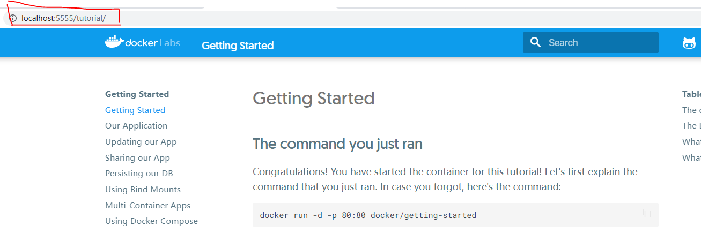
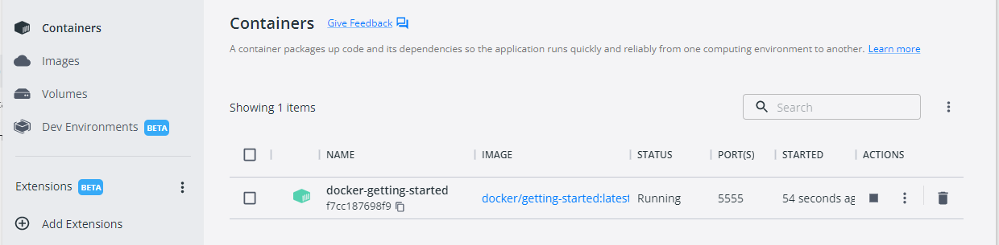
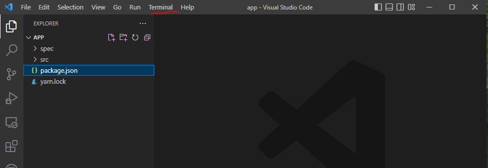
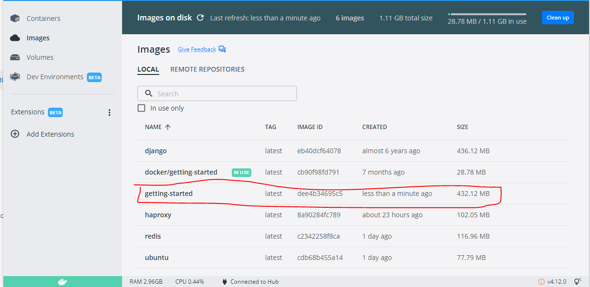
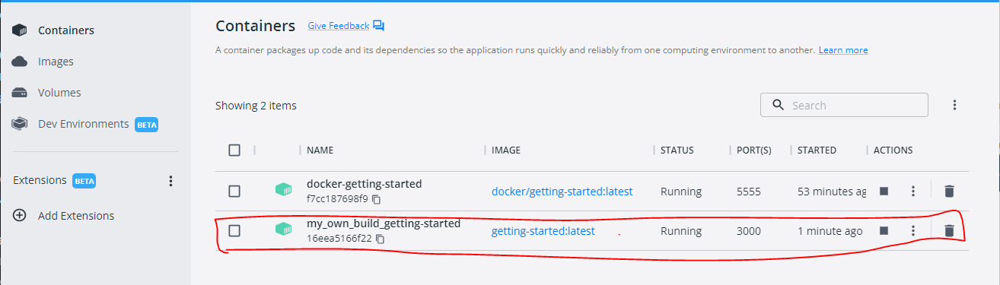

docker构建远程项目和本地项目
docker构建远程项目
拉取docker/getting-started镜像
PS C:\Users\Nicklaus> docker pull docker/getting-started
Using default tag: latest
latest: Pulling from docker/getting-started
df9b9388f04a: Pull complete
5867cba5fcbd: Pull complete
4b639e65cb3b: Pull complete
061ed9e2b976: Pull complete
bc19f3e8eeb1: Pull complete
4071be97c256: Pull complete
79b586f1a54b: Pull complete
0c9732f525d6: Pull complete
Digest: sha256:b558be874169471bd4e65bd6eac8c303b271a7ee8553ba47481b73b2bf597aae
Status: Downloaded newer image for docker/getting-started:latest
docker.io/docker/getting-started:latest
启动docker/getting-started容器
PS C:\Users\Nicklaus> docker run -d -p 5555:5555 --name docker-getting-started docker/getting-started
f7cc187698f91ddb67572e65357d65f36aae7f7373e0b3c0c51b4b0897b9fc84
-d: 让容器在后台运行(detached模式)-p 5555:5555: 将宿主机的5555端口映射到容器的5555端口。可通过http://localhost:5555来访问内容,如下所示： --name：指定容器的名字为docker-getting-started- 容器在Docker Desktop下的显示内容为： 
docker构建本地项目
以github上的docker/getting-started项目为例
- 以下说明皆基于Windows系统
- 克隆仓库到本地,我的本地地址为：
F:\HappyCoding\Docker - 打开Visual Studio Code,进入项目app目录：
F:\HappyCoding\Docker\getting-started\app - 打开上面的图片画出来的Terminal,输入：
type nul > Dockerfile，执行后会在app目录下生成Dockerfile文件 - 将以下代码复制到
Dockerfile文件中# syntax=docker/dockerfile:1 FROM node:12-alpine RUN apk add --no-cache python2 g++ make WORKDIR /app COPY . . RUN yarn install --production CMD ["node", "src/index.js"] EXPOSE 3000 - 运行
docker build -t getting-started .命令构建docker项目,别忘了最后面的.在Docker Desktop中可以看到我们经过PS F:\HappyCoding\Docker\getting-started\app> docker build -t getting-started . [+] Building 11.9s (3/3) FINISHED => [internal] load build definition from Dockerfile 1.3s => => transferring dockerfile: 227B 0.1s => [internal] load .dockerignore 1.5s => => transferring context: 2B 0.0s => ERROR resolve image config for docker.io/docker/dockerfile:1 10.1s ------ > resolve image config for docker.io/docker/dockerfile:1: ------ failed to solve with frontend dockerfile.v0: failed to solve with frontend gateway.v0: failed to do request: Head "https://registry-1.docker.io/v2/docker/dockerfile/manifests/1": net/http: TLS handshake timeout PS F:\HappyCoding\Docker\getting-started\app> docker build -t getting-started . [+] Building 412.4s (16/16) FINISHED => [internal] load build definition from Dockerfile 0.8s => => transferring dockerfile: 32B 0.0s => [internal] load .dockerignore 1.0s => => transferring context: 2B 0.0s => resolve image config for docker.io/docker/dockerfile:1 6.9s => [auth] docker/dockerfile:pull token for registry-1.docker.io 0.0s => docker-image://docker.io/docker/dockerfile:1@sha256:9ba7531bd80fb0a858632727cf7a112fbfd19b17e94c4e84ced81e24ef1a0dbc 7.7s => => resolve docker.io/docker/dockerfile:1@sha256:9ba7531bd80fb0a858632727cf7a112fbfd19b17e94c4e84ced81e24ef1a0dbc 0.2s => => sha256:9ba7531bd80fb0a858632727cf7a112fbfd19b17e94c4e84ced81e24ef1a0dbc 2.00kB / 2.00kB 0.0s => => sha256:ad87fb03593d1b71f9a1cfc1406c4aafcb253b1dabebf569768d6e6166836f34 528B / 528B 0.0s => => sha256:1e8a16826fd1c80a63fa6817a9c7284c94e40cded14a9b0d0d3722356efa47bd 2.37kB / 2.37kB 0.0s => => sha256:1328b32c40fca9bcf9d70d8eccb72eb873d1124d72dadce04db8badbe7b08546 9.94MB / 9.94MB 6.1s => => extracting sha256:1328b32c40fca9bcf9d70d8eccb72eb873d1124d72dadce04db8badbe7b08546 0.3s => [internal] load .dockerignore 0.0s => [internal] load build definition from Dockerfile 0.0s => [internal] load metadata for docker.io/library/node:12-alpine 7.3s => [auth] library/node:pull token for registry-1.docker.io 0.0s => [internal] load build context 1.0s => => transferring context: 4.65MB 0.1s => [1/5] FROM docker.io/library/node:12-alpine@sha256:d4b15b3d48f42059a15bd659be60afe21762aae9d6cbea6f124440895c27db68 22.4s => => resolve docker.io/library/node:12-alpine@sha256:d4b15b3d48f42059a15bd659be60afe21762aae9d6cbea6f124440895c27db68 0.3s => => sha256:d4b15b3d48f42059a15bd659be60afe21762aae9d6cbea6f124440895c27db68 1.43kB / 1.43kB 0.0s => => sha256:4517380049fc3c9aacceae7764fcf3500354b0ac8a47e4afb35b5bbeb75b9498 1.16kB / 1.16kB 0.0s => => sha256:bb6d28039b8cec9aa8d9032f9aa640a792a60c2cb1644691627bf046aab27c8b 6.58kB / 6.58kB 0.0s => => sha256:3bf6d738020517f4622814e8c21db4b4aaa78ae7cab4e4f872c11696886c6285 24.91MB / 24.91MB 15.8s => => sha256:31f0fb9de071269230cb0f786012ae4e81d26e489b1fe922e57b5201e6bc9ab0 451B / 451B 6.7s => => sha256:7939e601ee5e4737cf7fdb6d1dfe31ca4c2697109290462f694710761450aef0 2.36MB / 2.36MB 6.5s => => extracting sha256:3bf6d738020517f4622814e8c21db4b4aaa78ae7cab4e4f872c11696886c6285 1.4s => => extracting sha256:7939e601ee5e4737cf7fdb6d1dfe31ca4c2697109290462f694710761450aef0 0.1s => => extracting sha256:31f0fb9de071269230cb0f786012ae4e81d26e489b1fe922e57b5201e6bc9ab0 0.0s => [2/5] RUN apk add --no-cache python2 g++ make 53.9s => [3/5] WORKDIR /app 1.8s => [4/5] COPY . . 1.1s => [5/5] RUN yarn install --production 302.5s => exporting to image 4.6s => => exporting layers 4.2s => => writing image sha256:dee4b34695c58cb58a310f06e281249190c96a5ef9d737f2a775f7eacea654ad 0.1s => => naming to docker.io/library/getting-started 0.1s Use 'docker scan' to run Snyk tests against images to find vulnerabilities and learn how to fix themdocker build生成的镜像getting-started - 为我们自己build的镜像来生成并启动容器
以上输出说明创建容器并启动成功，在
PS F:\HappyCoding\Docker\getting-started\app> docker run -dp 3000:3000 --name my_own_build_getting-started getting-started 16eea5166f22498808a320b866d44c3798e26b387309aea1286060867fecf785Docker Desktop中可以看到我们的容器了 
「如果这篇文章对你有用,请随意打赏」
 YinChao's Blogs
YinChao's Blogs
如果这篇文章对你有用,请随意打赏
使用微信扫描二维码完成支付

comments powered by Disqus